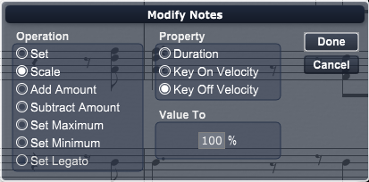

Choose this command to alter various MIDI playback attributes of the selected notes. When you choose the Modify Notes command, Overture produces the Modify Notes dialog box.

You can move the Modify Notes dialog box around the desktop by dragging its title bar.
This command affects only the MIDI playback of notes, not their appearance in the score. For you to hear any edits you make to MIDI data, Overture must use the As Recorded play style (as selected in the Play Style sub menu in the Options menu). See Play Style for more information.
The Modify Notes dialog box contains three parameters:
We explain each of these parameters in the following three sections.
The Modify Notes dialog box always reads like a sentence. For instance, the dialog box shown above reads “Set duration to 240 units.”
Use the Note Property pop-up menu to select which note property you want to modify. Click the current note property and select a new one from the pop-up menu.
The following note properties are available in the Modify Notes dialog box:
Use the Operation pop-up menu to select how you want to modify a note property. Click the current operation and select a new operation from the pop-up menu.
The following operations are available in the Modify Notes dialog box:
For example, if the note property is Key Velocity and the Value Setting is 64, then selecting Set changes all selected note velocities to 64.
For example, if the note property is Duration and the Value setting is 50%, then selecting Scale changes all selected note durations to half their current value.
For example, if the note property is Key Velocity and the Value Setting is 10, then selecting Add Amount increases the velocity of all selected notes by a value of 10.
For example, if the note property is Key Velocity and the Value Setting is 10, then selecting Subtract Amount decreases the velocity of all selected notes by a value of 10.
For example, if the note property is Key Velocity and the Value setting is 100, then selecting Max Limit limits the maximum velocity of any selected note to a value of 100. Overture sets any notes with original velocities greater than 100 to a value of 100, and leaves unchanged notes with original velocities less than 100.
For example, if the note property is Key Velocity and the Value Setting is 50, then selecting Min Limit limits the minimum velocity of any selected note to a value of 50. Overture sets any notes with original velocities less than 50 to a value of 50 and leaves unchanged any notes with original velocities greater than 50.
For example, if the note property is Duration and the Value setting is 50%, selecting Legato changes all selected note durations to half their natural values. Quarter notes have the duration of eighth notes (240 units), eighth notes have the duration of sixteenth notes (120 units), and so on.
Use the Value setting in the Modify Notes dialog box to define how much the selected operation acts upon the note property.
The Value setting changes depending on which operation and which note property you’ve selected.
To modify the MIDI playback of selected notes in your score:
Overture modifies the MIDI note data of the selected notes.